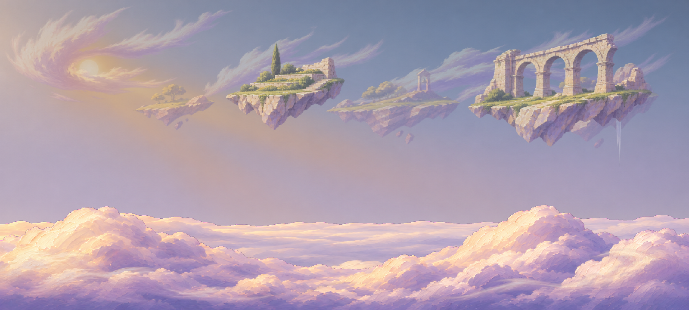
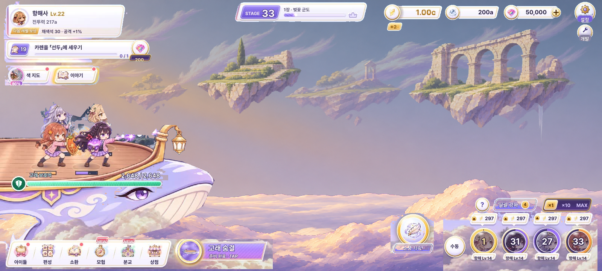
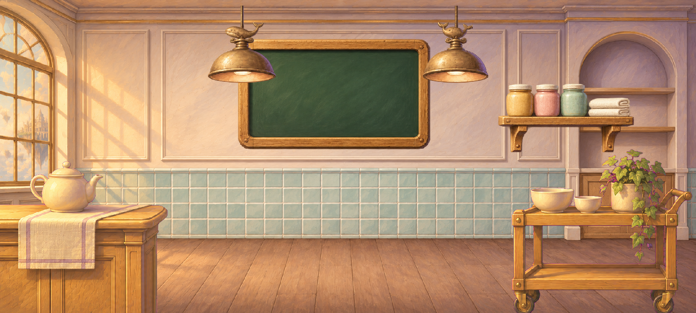
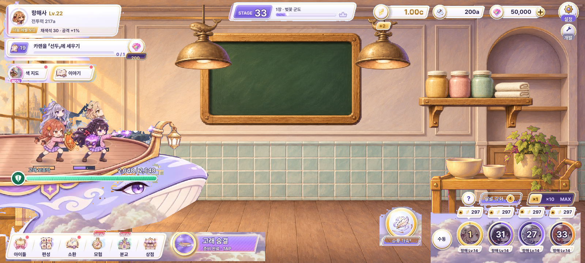

A 확정 · 세계의 깊이를 나누다
Round 2 · 페인터리 시네마틱 / 전투 14층 + 급식실 9층 / 각 층 1600×720 PNG.
빈 하늘을 떠 있는 정원·수로 유적·먼 종탑·두 겹 구름바다로 확장하고, 실내는 창·벽체 몰딩·선반·급식 가구로 채웠습니다. 캐릭터와 게임 에셋은 변경하지 않았습니다.
AI 생성 샘플 · OpenAI Images / gpt-image-2 · 13종 소스 플레이트를 개별 생성한 뒤 독립 물체별로 분리·스케일 정리했습니다. 마젠타 단색은 키 제거, 이미 출력된 실제 alpha는 보존, 검정 위 광선은 밝기를 alpha로 변환했습니다. 가짜 체크무늬 없음. 광원은 왼쪽 위, 크림·앤티크 골드의 빛과 라벤더 그림자로 통일했습니다.
01 · 1장 하늘 — 14층 파랄랙스
고층운 3 / 먼 섬 3 / 중경 정원·수로 2 / 먼 구름바다 / 가까운 구름 / 앞 안개 2 / 하늘 / 해·광선. 레이어별 다른 폭과 주기로 왕복 이동하는 깊이 검토입니다. 무한 루프 스크롤이 아니며 속도는 검토용입니다. 중앙 하단은 전투 동선을 위해 남겼습니다.

14층 정지 합성 · 저장 PNG
동일 실제 HUD·갑판 합성 · 저장 PNG전투 레이어별 보기 / 켜기·끄기 / PNG
02 · 급식실 — 9층 파랄랙스
클린 룸 밑판 / 벽 분리판 / 칠판 / 선반 / 등 2 / 급식대 / 트롤리 / 창빛. 창가와 가구를 풍부하게 만들되 가운데 SD 배치 공간은 유지했습니다. 실내에서는 원근이 틀어지지 않도록 이동폭을 작게 제한합니다. 밑판의 바닥과 벽은 같은 소스이며 벽 분리판이 위에서 덮습니다.

급식실 9층 정지 합성 · 저장 PNG
동일 전투 HUD 대비 실험 · 급식실 전투 제안 아님실내 레이어별 보기 / 켜기·끄기 / PNG
HUD는 실제 기존 캡처를 영역 마스크·블루 키로 추출했습니다. 재생성한 UI가 아닙니다. 머리·숫자 주변의 미세한 누락과 구름 배경 잔여가 있어 최종 합성용 정밀 누끼는 아닙니다. 모든 페이지 이미지·참조 파일은 이 폴더 안에 저장되어 웹 복사 시 외부 프로젝트 경로가 필요 없습니다.
검수 결과 / 프로덕션까지 남은 것
원본 15장(재시도 포함)을 직접 확인했습니다. 하늘에 구름이 섞여 나온 첫 플레이트와 검정 배경이 잘못 잘린 첫 실내 광선은 각각 1회 재생성했습니다. 아치 지지·가구 결구·타일 원근·광원·텍스트 부재를 확인했고, 중경 섬/등/선반은 합성 단계에서 크기를 정리했습니다. 고층운은 존재감을 낮춰 불꽃처럼 과장되는 인상을 억제했습니다.
아직 게임 적용용 원화는 아닙니다. 마젠타 경계의 미세 프린지, 잎·얇은 구름의 수작업 alpha 클린업, 루프 구름 양끝 무봉제화, 벽/바닥 완전 독립 클린 플레이트, 물체별 접촉 그림자와 창빛 마스크, 실내 실제 방 비율 리레이아웃이 필요합니다. 현재 고층운·섬과 일부 가구는 하나의 개별 생성 플레이트에서 물체별 분리했으며 모든 물체를 별도 생성한 것은 아닙니다.
23층은 아트 검토용 세분화입니다. 모바일 실장 때 정적 물체는 아틀라스/공유 패스로 묶고, 1280×720·1600×720, 항해 가속, 잿빛 복원, 기존 해 FX 중첩, gl_compatibility의 메모리·드로콜을 검수해야 합니다. 게임 적용·빌드는 수행하지 않았습니다.
생성 조건 / 프롬프트 / 원본
lane openai-oauth / model gpt-image-2, 별도 크기·품질 옵션 없음. 공통 프롬프트: cinematic matte opaque painting, cream/antique-gold upper-left light, lavender shadows, deliberate large forms, no text/symbols/checkerboards/plastic/bloom. 하늘은 cloudless gradient, 고층운은 three cirrus groups, 먼 섬은 grove/bell tower/waterfall, 중경은 terraced garden/three-arch aqueduct, 구름바다는 low stratocumulus/near sculpted bank, 앞 안개는 two tapered wisps. 실내는 frontal clean wall with window/alcove and oak floor, blank board/shelf with ceramic jars, two whale-finial lamps, serving counter/trolley, separate window-light shafts. 각 레이어 카드에 생성 원본 링크를 제공합니다. 원본 재시도 전 파일도 r2/originals/에 보존했습니다.
Round 1 · 선택 기록
PD 선택: 두 장면 모두 A. 아래는 1차 A/B/C 원형이며 2차 최종판과 혼동하지 않도록 분리했습니다.
1차 전체 비교 페이지 · 배경 전수 목록과 전체 교체 배치레이어 준비 중…